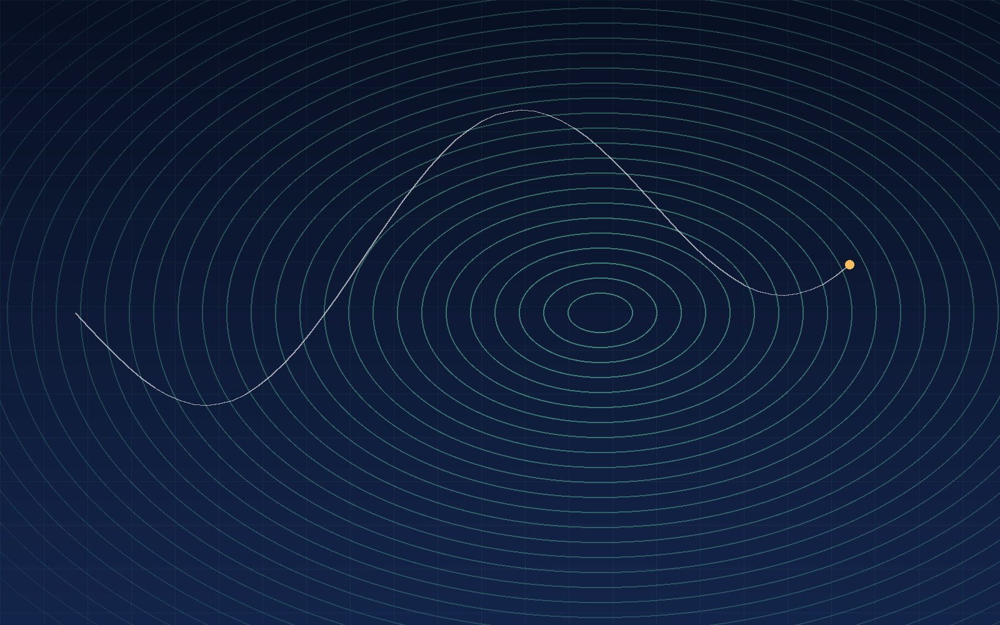
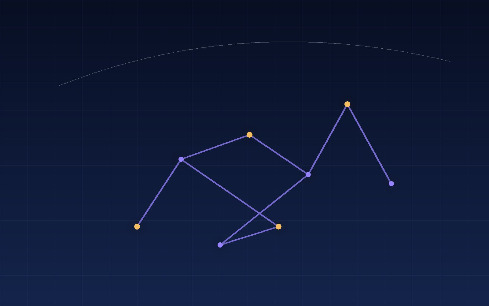
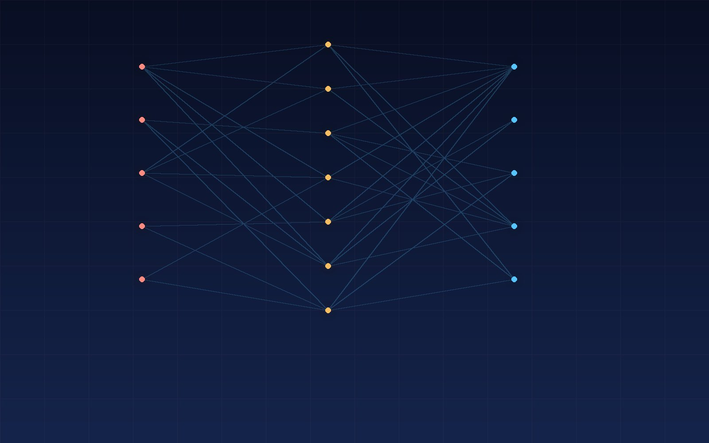

Research programs
Five long-horizon programs, each with its own platforms, students, and field sites. All of them address the same problem: estimating the state of the world well enough to act on it.
SLAM and 3D reconstruction
We build estimation pipelines that fuse lidar, vision, inertial, and leg odometry into a single metric-consistent map. The work targets long-duration autonomy: loop closure that survives perceptual aliasing, map representations that stay compact over kilometres of travel, and reconstructions dense enough to plan against.
- Multi-modal factor-graph and sliding-window estimators
- Learned loop closure and place recognition
- Dense neural and volumetric map representations

Aerial robotics
Aerial platforms are our fastest-moving testbed. We study compute-aware perception stacks that run entirely onboard, trajectory generation in cluttered space, and inspection behaviours that stay safe when the map is wrong. Field deployments keep us honest about wind, dust, and battery.
- Onboard perception on embedded compute
- Trajectory optimization in unknown space
- Infrastructure inspection and aerial survey

Legged locomotion and manipulation
Legged systems reach terrain that wheels cannot. We work on model-based and learned controllers that reason about contact, terrain uncertainty, and whole-body dynamics of mobile manipulators, with an emphasis on robustness outside simulation.
- Whole-body control and contact planning
- Sim-to-real transfer for locomotion policies
- Mobile manipulation and grasp reasoning

Robot perception and learning
Perception limits every downstream decision. We study self-supervised and semi-supervised learning for depth, semantics, and scene flow; calibration and uncertainty estimates that a planner can act on; and inference that fits inside a robot's power budget.
- Self-supervised depth and scene flow
- Uncertainty-aware semantic segmentation
- Efficient inference for embedded platforms

Field and marine robotics
San Diego is an unusually good laboratory, with coastline, chaparral, steep terrain, and a dense robotics community nearby. We design systems for environmental monitoring, search and rescue support, and scientific data collection where communications drop out and recovery is not an option.
- Autonomy under degraded communication
- Environmental sensing and mapping
- Failure detection and safe recovery

Methods
Probabilistic estimation
Factor graphs, Kalman and particle filters, robust cost functions, consistency analysis.
3D vision
Multi-view geometry, structure from motion, dense depth, learned correspondence.
Learning for robots
Self-supervised representations, sim-to-real transfer, inference under power and latency budgets.
Hardware and fieldcraft
Calibration, time synchronization, mechanical integration, and field protocol.
3D vision
Multi-view geometry, structure from motion, dense depth, learned correspondence.
Learning for robots
Self-supervised representations, sim-to-real transfer, inference under power and latency budgets.
Hardware and fieldcraft
Calibration, time synchronization, mechanical integration, and field protocol.
Collaboration
We work with labs, agencies, and companies on problems where the sensor is limited and the environment is unstructured. Write to us with a short description of the problem and the data you have.